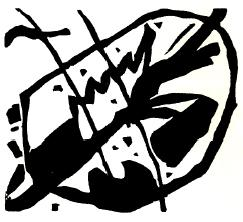
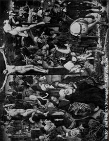

Üçgenin Hareketi

Ruhun yaşamı, yatay çizgilerle eşit olmayan bölümlere ayrılmış, en dar bölümün en üstte yer aldığı büyük, dar açılı bir üçgen şekliyle temsil edilebilir. Bölüm çizgisi ne kadar aşağıdaysa, bölümün genişliği, derinliği ve alanı o kadar büyüktür.
Tüm üçgen yavaşça ve fark edilmesi güç bir biçimde ileri ve yukarı doğru hareket eder. Üçgenin tepesi bugün, ikinci bölüm ise yarındır. Bugün bu tepe tarafından kavranabilen ve üçgenin geri kalanı için anlaşılmaz gevezeliklerden ibaret olan şey, yarın ikinci bölümün duygu ve düşüncelerini belirleyecektir.
Üstteki bölümün tepesinde çoğu kez biri durur, yalnızdır, neşeli görünümünün altında derin bir hüzün gizlidir. En yakınındakiler bile onu anlamazlar. Öfkeyle onun şarlatan ya da deli olduğunu söylerler. Beethoven tüm yaşamı boyunca böyle yapayalnız kalmış ve aşağılanmıştır.[8] Üçgenin daha büyük olan kısmının, onun bir zamanlar yalnız başına durmuş olduğu noktaya ulaşması için daha kaç yıl geçmesi gerekir? Dikilen anıtlara ve heykellere rağmen, gerçekten de bu seviyeye ulaşabilmiş çok kişi var mı? [9]
Sanatçılara üçgenin her bölümünde rastlanır. Kendi bölümünün sınırlarının ötesini görebilenler, çevrelerinin gözünde kâhindirler ve dik kafalı topluluğun ilerlemesine yardımcı olurlar. Oysa insanlar, aslında kör olanları, üçgenin hareketini değersiz nedenler yüzünden geciktirenleri izler, onların dehalarını alkışlar. Bölüm ne kadar büyükse (yani üçgende ne kadar aşağıdaysa), sanatçının sözlerini anlayanların sayısı o kadar fazladır. Her bölüm, bilinçli ya da çoğunlukla bilinçsiz bir şekilde, kendisine uygun ruhsal gıdanın peşindedir. Bu gıda sanatçı tarafından sunulmaktadır ve hemen alttaki bölüm, yarın ellerini şevkle bu gıdaya uzatacaktır.
Üçgen benzetmesi ruhsal yaşantının tüm yönlerini ifade etmek için yeterli değil. Örneğin burada, işlerin karanlık tarafından ya da dinmek bilmez sıkıntıdan eser yok. Bir düzeydeki ruhsal gıdanın daha yukarıdakileri beslemeye yettiği de olur. Ama bu gıda onlar için zehirdir. Birazı ruhlarını yavaşça aşağıdaki bölüme çeker, fazlasıysa daha da aşağılara savuruverir. Sienkiewicz bir romanında ruhsal yaşantıyı yüzmeye benzetmektedir. Yorulmak nedir bilmeden çabalamayan, batmamak için mücadele etmeyen kişinin zihni ve ahlakı dibi boylar. Bu zorlu geçitte insanın yeteneği (yine İncildeki anlamıyla) lanete dönüşür. Hem yalnızca sanatçının değil zehri tadanların da başına gelir bu. Sanatçı, yeteneğini daha düşük seviyedeki gereksinimlerine seferber eder, sözde sanatsal bir form içinde saflıktan uzak şeyler sunar, önemsiz şeylerle uğraşır, onları kötülükle karıştırıp insanları aldatır ve kendilerini ve çevrelerindekileri ruhsal bir açlık içinde olduklarına ve susuzluklarını bu saf kaynakta dindireceklerine inandıran insanların kendilerini kandırmalarına yataklık eder. Böyle sanat, ileri taşımak bir yana, ileriye gitmek için uğraşanları geri çekip mikrobunu dört yana bulaştırarak gerilemeye yol açar.
Sanatın yüce savaşçılardan mahrum olduğu, gerçek ruhsal gıdanın bulunmadığı bu gibi dönemler, ruhsal dünyanın gerileme dönemleridir. Ruhlar, aşağı bölümlere doğru durmaksızın düşer, üçgen ise hareketsiz, hatta aşağıya ve geriye doğru gider gibidir. İnsanlar, yalnızca görünür sonuçları değerlendirip, maddiyatı düşündüklerinden, bu kör ve ahmak dönemlere özel bir değer atfederler. Maddeden başka bir şeyi düşünmeyen teknik ilerlemeleri “büyük başarı” olarak adlandırırlar. Gerçek ruhsal kazanımlar hafifsenir ya da tamamen yok sayılır.
Önsezi sahibi insanlar küçümsenir ya da anormal ve tuhaf bulunur. Uyuşukluğa kapılmayan ve ruhsal yaşantıya belli belirsiz özlem duyanlar, tesellisiz acı acı ağlarlar. Ruhun gecesi gitgide kararır. Bu kör ve dehşet içindeki kılavuzların ve takipçilerinin acıları gittikçe derinleşir. Korku ve şüphe içinde kıvranan, cesaretlerini yitirmiş bu kimseler, gecenin üzerlerine yavaş yavaş inmesindense son bir sıçrayışla aniden karanlığın içine dalmayı yeğlerler.
Böyle zamanlarda sanat, adi ihtiyaçlara hizmet etmekte, maddi amaçlar için kullanılmaktadır. Özünü somut gerçeklerde arar, çünkü daha yüce bir şeyden haberi yoktur. Tek amacı nesneleri yeniden üretmektir ve aynı şeyleri üretip durur. “Ne?” sorusu ortadan kalkar, yalnızca “nasıl?” sorusu kalır. Bu maddi nesneler hangi yöntemle yeniden üretileceklerdir? Bu sorudan başka bir doğru yoktur. Sanat ruhunu kaybetmiştir.
Sanatçı, yöntem arayışına kendisini iyice kaptırabilir. Sanat öyle özel bir alana dönüşür ki, sanatçılardan başka kimse ondan anlamaz; sanatçılar ise öfkeyle, ilgisizlikten yakınırlar. Böyle zamanlarda sanatçının pek bir şey söylemesine gerek yoktur; yalnızca önemsiz bir ilginçlikle ün salmış olması yeter. Böylece sanatçı, küçük bir patron grubu ve uzmanlarca övülür (bu da onun için epey kârlı bir iştir) ve ortaya yetenekli, usta sanatçılardan oluşan bir topluluk çıkıverir. İşte, sanat böyle kolayca zaptedilir. Her sanat çevresinde, çoğu yalnızca yeni bir teknik arayışında olan, soğuk kalpleri ve uyuşmuş ruhlarıyla, sanat aşkından yoksun bir biçimde eser veren böyle binlerce sanatçı bulunur.
Rekabet ortaya çıkar. Başarı uğruna verilen amansız savaş gitgide daha da maddi bir boyut kazanır. Bu karmakarışık sanat ve resim dünyasının zirvesine çıkmayı başaran bir avuç insan, ele geçirdikleri topraklara yerleşip siper kazmaya koyulurlar. Çok uzaklarda kalan halk şaşkınlık içinde onlara bakar, ilgisini yitirir ve sırtını dönüp gider.
Şöhret uğruna süregiden tüm bu şaşkınlık, kargaşa ve vahşete rağmen, ruhsal üçgen yavaşça fakat karşı konulmaz bir güçle ileri ve yukarı doğru ilerler.
Görünmez Musa dağdan iner ve altın buzağının çevresinde oynanan dansları görür. Oysa insanlığa yeni doğrular getirmiştir.
Kalabalığın duyamadığı sesi önce sanatçı duyar. Neredeyse farkında olmaksızın bu çağrıyı izler. Aslında o “nasıl?” sorusunda yeniden doğuşun tohumları gizlidir. “Nasıl?” sorusu doyurucu bir yanıtla karşılanamadığı zaman, (bizim bugün kişilik dediğimiz) şey etrafındaki nesnelerde maddeden başka şeyler görmeye başlayabilir; maddi boyutlardan biraz uzaklaşıp, amacı her şeyi olduğu gibi, yani düş gücünden yoksun bir şekilde üretmek olan gerçekçilik döneminden farklı bir şekilde algılama imkânı bulabilir.[10]
Sanatçının ruhsal gücü, “nasıl?” sorusunun üstesinden gelebilir ve ince duygularını ortaya dökmeyi başarabilirse, sanat kendisini yitirdiği ve gözlerini yeni yeni açan ruhsal yaşantının ruhsal gıdasına taşıyacak şeyin yoluna koyulmuş olur. Bu şey artık önceki dönemdeki gibi maddi ve nesnel olmayacaktır; bu, sanatın iç hakikatidir, onsuz ne bireyin ne de insanlığın gövdesi sağlıklı olamaz.
Bu şey yalnızca sanatın sezebildiği ve yalnızca onun, kendine has ifade biçimleriyle ortaya koyabildiği iç hakikattir.
